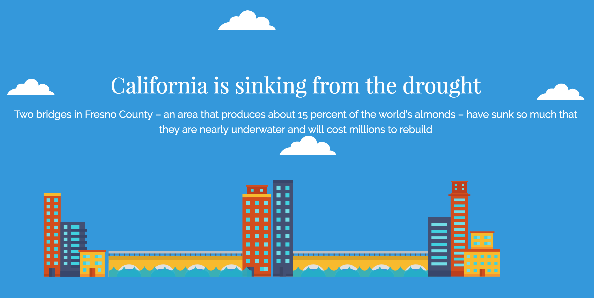

Drought in California:
To raise awareness about the drought in CA and create a chatbot that incites a call for action
[Interactive Narrative] [Facebook Messenger] [Chatbot] [Javscript Animation] [Python] [Matlab]
Visit our site or talk to our chatbot! Heavily involved in the design process, the javascript animation, and the NASA GRACE data manipulatin of graviational variations
We created a visualization project to raise awareness around the drought in California. We wanted the public to be fully cognizant of the magnitude of the problem, the source of the problem, and what they can do about it. Our interactive visualization tells a compelling story and links to a Facebook Messenger chatbot named Oasis. Our chatbot, Oasis, chats with users and allows users to take meaningful steps to ameliorate the drought problem. Oasis prompts users to sign a petition, donate to the cause, and connects them with relevant organizations/non-profits. She is the world's first chatbot to allow users to sign petitions.
We used Greensock to animate relevant stories, data points, and images. We used the Node.js and the Change.org API packages to allow users to sign petitions via the chat interface. We used existing data from the major climate organizations such as United States Drought Monitor to tell the severity of the Drought. We used materialize package to easily format the HTML website and to display in a compelling format. We leveraged open soure code. We used Plotly, a JavaScript library to make a 3D model of California's sinking problem. We used GRACE satellite imagery NASA data to show how much California is sinking. We used preprocessing in python and conducted our data analysis in Matlab.
Because we were creating a unique and original chatbot, we couldn't find good documentation or debugging support online for our specific problems. Because we wanted to use different visualization techniques to tell our story (3D modelling, animation, dynamic visualization, interactive visualization), our team members all worked on different techniques of visualization. Therefore, often one team member could not directly help one another. We were hacking without much sleep, so by 4:30am it became harder to articulate a clear and crisp story when we got additional data/research.
We were amazed by how much we can get done in a quick time frame if everybody is on the same page. We created an outline of the story early on, and spent a good amount of time aligning people's viewpoints. After we created the detailed outline, we had minimal communication and project management problems. As we researched the project, we became much more aware of the severity of the problem that California is facing. We were also shocked by the lack of data to manage underground water in California.
Group Members: Parv Sondhi; Daniel Chen; Yifei Liu; Robin Oh
home{kind=link}